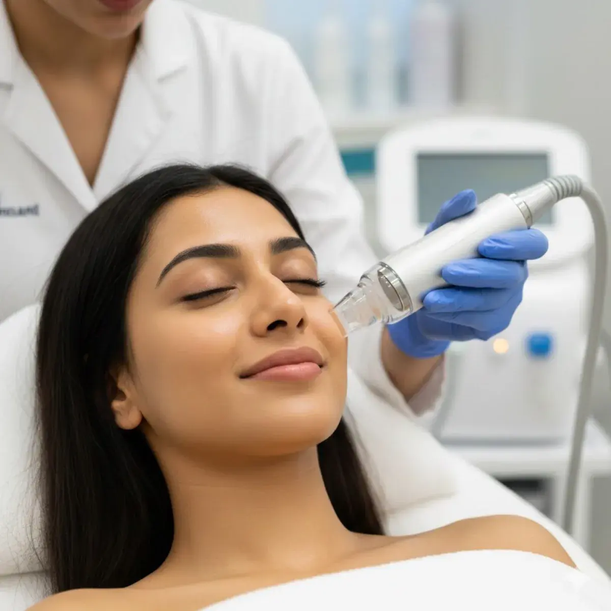
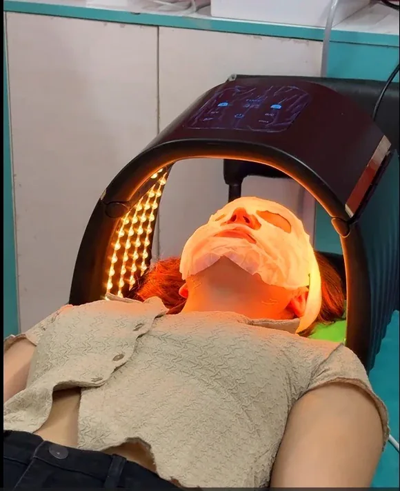
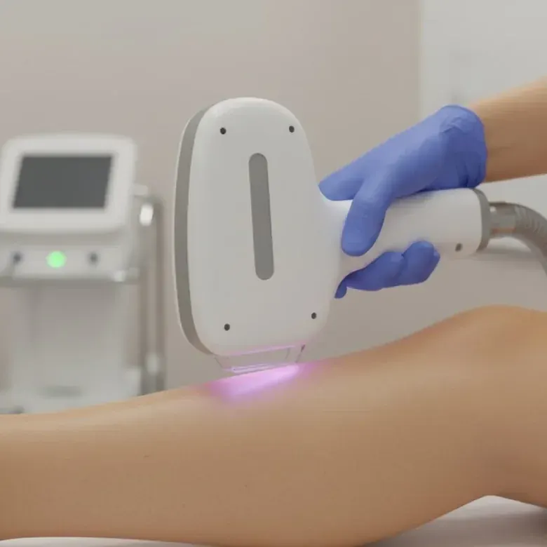
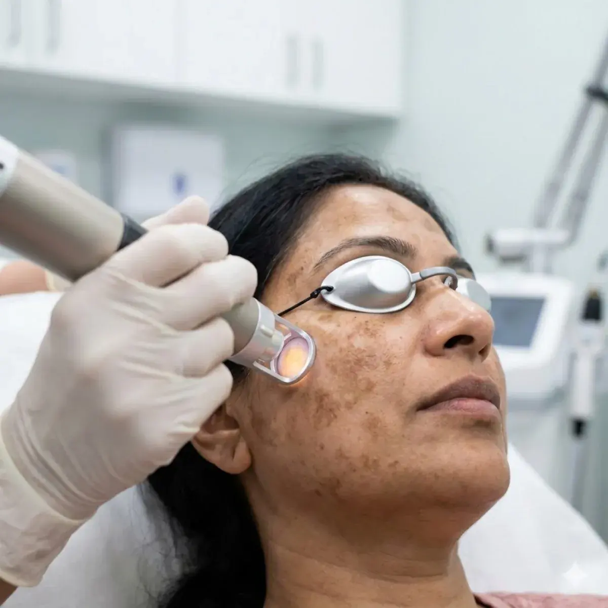
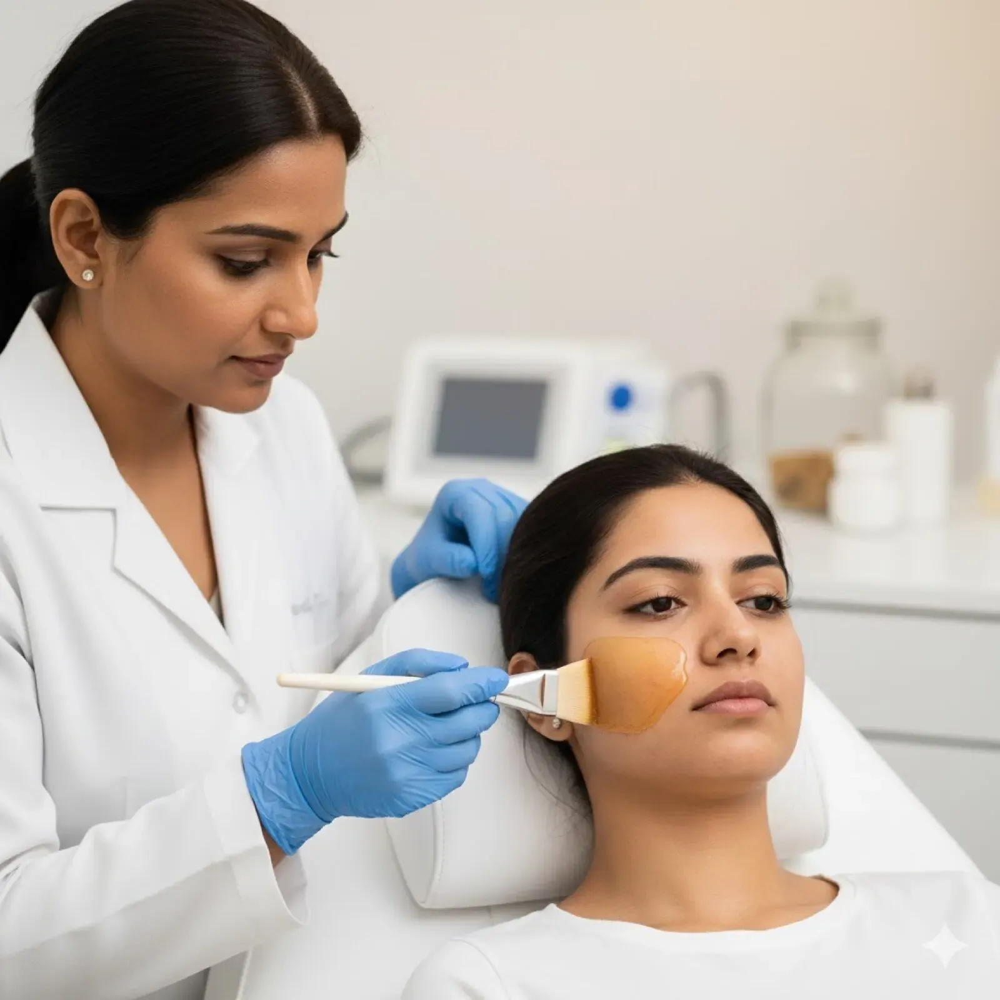
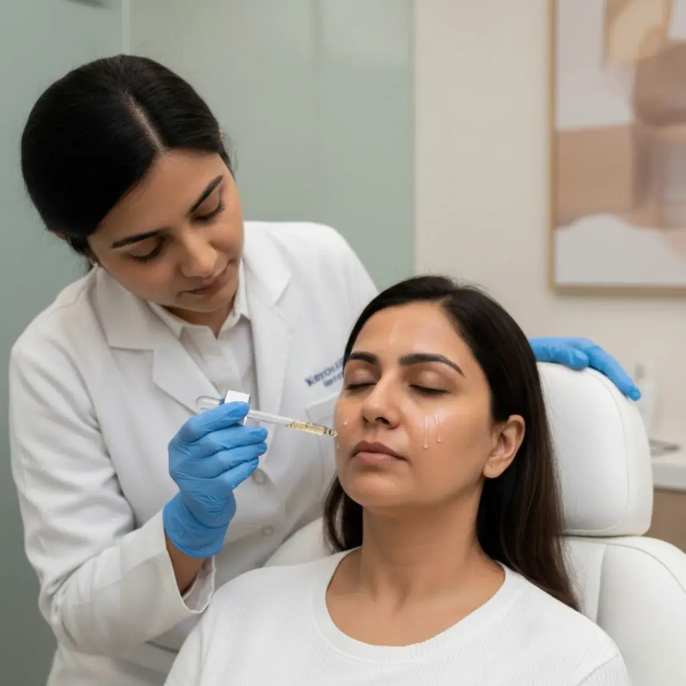
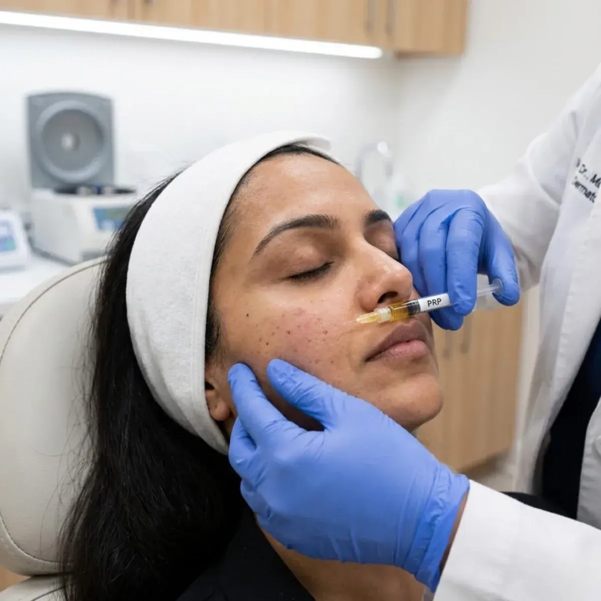
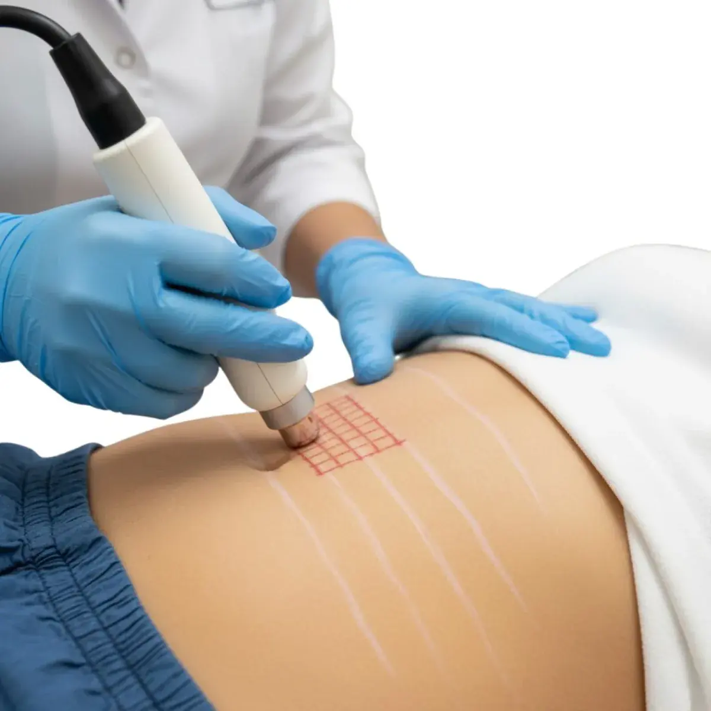

Precision Skin Aesthetics for Radiant, Clear & Youthful Skin
At Kezza Hair & Skin Clinic, your skin receives the highest level of dermatological precision. Our senior skin specialists combine US FDA-approved laser technology with evidence-based cellular therapies to treat acne scars, stubborn pigmentation, and signs of aging.
Every protocol is customized for Indian skin types across our premier centres in Jaipur, Ajmer, and Rajasthan—delivering visible clinical transformations with complete comfort.

US FDA-Approved Systems
Multi-Step Medical FacialHydra Facial — Deep Pore Cleansing, Hydration & Instant Glow
A hydra facial is a multi-step medical facial. Using gentle suction and a spiral-tip handpiece, it unclogs congested pores, lifts out blackheads and excess oil, and then applies serums with ingredients such as hyaluronic acid, peptides and antioxidants. Read our hydra facial steps and benefits guide. Read the full Hydra Facial guide.
Acne Control & Scar Revision — Clear Active Breakouts & Flatten Scars
Struggling with painful breakouts, dark marks, or deep pitted scars? At Kezza Clinic, our skin doctors treat active acne and stubborn scars together. Using gentle medical care, scar-lifting subcision, and advanced collagen-building lasers, we calm active pimples and smooth uneven skin texture for lasting clarity. Explore our Acne Scar Treatment procedure, read our guide to scar options, or read the acne control guide.
“Every acne scar is unique. Instead of relying on a single cream or laser, we release the tight bands pulling the skin down and trigger your body’s natural collagen to fill in depressions. You get smooth, clear, and lasting results safely.”

Sub-Zero -5°C Contact ChillingTriple-Wavelength Laser Hair Reduction — Silky, Permanent Smoothness
Say goodbye to painful waxing, ingrown bumps, and daily shaving. Kezza Clinic utilizes cutting-edge triple-wavelength laser technology (755nm Alexandrite + 808nm Diode + 1064nm Nd:YAG) to simultaneously target shallow, medium, and deep hair follicles safely across all Indian skin tones. Read how laser hair removal works & sessions needed. Read the full laser hair removal guide. Planning several areas? See full body laser hair removal (₹4,000 per session).
“Combining 808nm Diode with 1064nm Nd:YAG penetrates deep into follicular root bulbs while protecting melanin-rich superficial epidermal layers, ensuring clinical safety and exceptional reduction efficiency.”
Pigmentation, Melasma & Complexion Brightening
Stubborn hormonal melasma, tanning, and sun spots require deep cellular targeting. Our multi-technology brightening protocols break down excess melanin and restore luminous, uniform clarity. Explore our Chemical Peels Guide. Read the full pigmentation and melasma guide.

Q-Switched Nd:YAG Laser Toning
Micro-acoustic pulses shatter dermal pigment deposits into micro-particles naturally flushed by your lymphatic system.
Q-Switch Laser · ₹4,000/session
Dermatological Chemical Peels
Custom blends of Glycolic, Lactic, and Mandelic acids dissolve dull superficial keratin and accelerate cellular renewal.
Chemical Peel · ₹2,500/session
Glutathione Master Antioxidant
A doctor-assessed antioxidant course (₹4,000 per session). Evidence for skin lightening is limited, so read our honest guide before you decide.
Glutathione Guide
PRP Vampire Glow Therapy
Autologous platelet growth factors reactivate dormant fibroblasts, restoring youthful elasticity and fading sun spots.
Explore Bio-PRPBotox, Dermal Fillers & HIFU — Youthful Contours with Natural Expressions
Reclaim your youthful firmness without looking "frozen" or overdone. Our experienced aesthetic doctors administer micro-calibrated botulinum neuromodulators and hyaluronic dermal fillers to soften expression lines, restore sunken cheeks, and lift sagging jawlines naturally. Read the Botox and dermal fillers guide.
“Modern anti-aging injections should never freeze facial emotions. We utilize micro-droplet placement calibrated to your muscular dynamics to gently soften lines while preserving your natural smile.”

Collagen Induction TechStretch Mark Reduction & Structural Collagen Remodeling
Post-pregnancy, weight shifts, and rapid adolescent growth spurts cause dermal elastin fibers to rupture, forming striae distensae (stretch marks). Our combination protocol of fractional resurfacing laser, microneedling RF, and skin bio-boosters stimulates dense new collagen synthesis, smoothing out texture and blending color.
Medical Dermatology & Minor Surgical Procedures
Evidence-based clinical treatments performed by our doctors in a clean, clinical setting.
RF Mole & Wart Removal
Precise radiofrequency electro-cautery removal of facial moles and viral warts with minimal to zero scarring.
Book ConsultationSkin Tag Cautery
Gentle, rapid removal of neck, eyelid, and underarm skin tags under topical soothing anesthesia in under 15 minutes.
Book ConsultationEczema & Dermatitis Care
Comprehensive barrier repair therapy, topical immunosuppressant modulation, and allergy trigger identification.
Book ConsultationPsoriasis & Fungus Management
Customized targeted systemic treatments, biologic monitoring, and specialized scalp dermatological wash protocols.
Book ConsultationSalon Facial vs. Kezza Medical Hydra Facial
Understand why medical-grade suction extraction and custom serum infusion outperform conventional parlor salon treatments.
How Your Treatment Works — 6 Easy Steps
From your first skin analysis to clear, confident results — here is exactly what happens when you visit Kezza Clinic.
Digital Skin Scan
We scan your face under medical UV light to detect hidden sun damage, deep pigmentation, and clogged pores invisible to natural light.
Doctor Consultation
A friendly one-on-one session with one of our skin doctors to examine your skin type, discuss your concerns, and answer all questions.
Custom Treatment Plan
A personalized protocol is created just for your skin tone and concerns, choosing the right laser parameters or medical serums.
Comfortable Laser / Facial
Performed with genuine US FDA-approved equipment. Continuous ice-cooling protects your skin so you feel relaxed and comfortable.
Soothing Glow Mask
Calming peptides, intense hydration, and broad-spectrum sunscreen are applied immediately to soothe your skin and lock in a fresh glow.
Follow-Up & Long Glow
We track your skin progress with follow-up comparisons and give you easy home-care tips so your radiant, clear skin lasts.
Skin & laser treatment prices at Kezza
Clear per-session prices for our skin treatments. Your doctor confirms the plan for your skin at consultation. Read and leave patient reviews on our clinics' Google listings.
Frequently Asked Questions
Most skin and laser procedures at Kezza Clinic are designed for high patient comfort. We utilize sub-zero contact cooling tips (-5°C) and clinical topical anesthetic creams to ensure complete comfort throughout your procedure.
Treatments like a hydra facial deliver instant pore clearance and radiant glow right after the 60-minute session. Laser toning and acne scar remodeling typically show progressive improvement over 2 to 4 weeks as new dermal collagen regenerates.
Mild micro-flaking can occur between days 3 to 5 following medium peels. This is a healthy indication of accelerated stratum corneum turnover, revealing fresh, unblemished skin underneath.
Yes. All laser systems at Kezza Clinic are US FDA-approved and specifically calibrated with 1064nm long-pulse and Nd:YAG wavelengths to safely bypass epidermal melanin, eliminating any risk of post-inflammatory burns.
For hydra facials and mild facials, mineral makeup can be worn within 4 to 6 hours. For fractional laser or subcision, we advise waiting 24 to 48 hours and avoiding heavy sweating to protect the healing micro-channels.
Transform Your Skin Health Today
A professional dermatological consultation is your first step toward clear, glowing skin.
Book Doctor Consultation Now
“A medical hydra facial combines gentle exfoliation and vacuum extraction without disrupting the skin barrier, so most people leave with a fresh, hydrated glow and no peeling. Sessions are ₹5,000, usually once a month.”